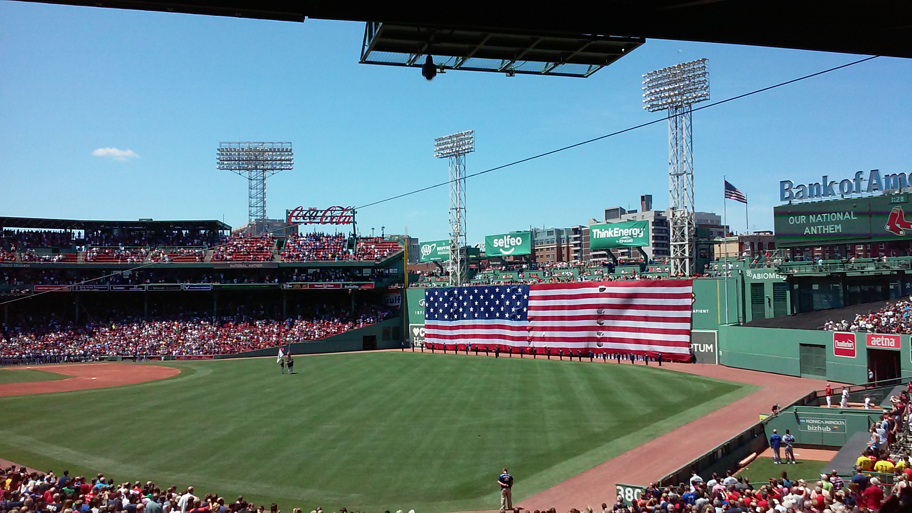

This is the second week, where the Git application is used to a greater deal. We covered Project Planning principles like Supply vs Demand time management, Serial vs Parallel projects, and project modularity. Our goal was to expand on HTML, CSS, and JS fundamentals.
Git version control and collaboration tools were examined and expanded upon this week as well.
Building a framework for this webpage to grow, through the HTML/CSS/JS structure, is the main target of this week.
